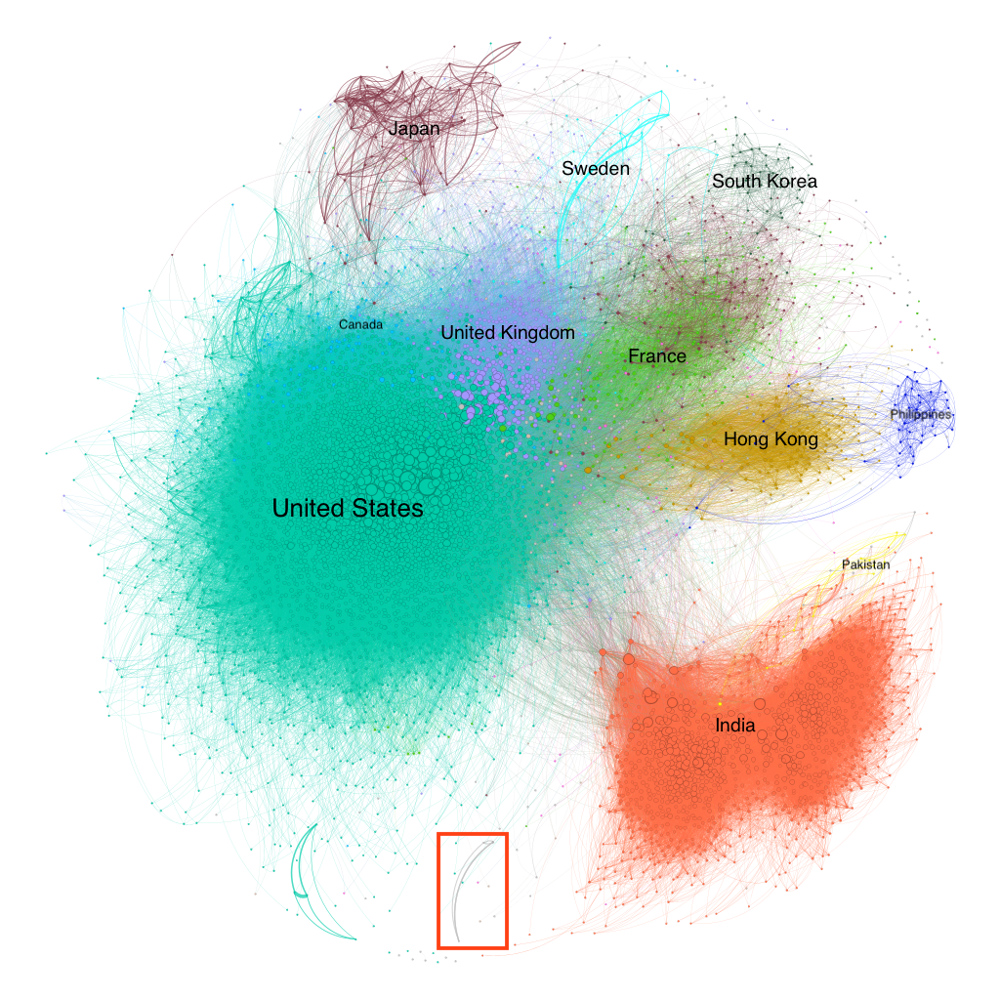

Behind the Scenes of Stardom: Decoding the Patterns in Actors' Careers
How do you envision your career? We, as scientists, will probably spend a substantial portion of our career in the same company in a specific field, like pharma, robotics or data science for the most talented of us. For actors, the journey is more complex, involving potential shifts between diverse movie genres and marked by the inevitable highs and lows inherent to the profession. In our project, we aim at analyzing the trajectory of acting careers.
Usually, when you seek information about someone's career, you turn to LinkedIn. Would you do the same to stalk your childhood actor crush? Well, good news, we are here to do it for you. From the number of connections (actors they have collaborated with), to the potential genre specialization in movies, and not forgetting the prospect of winning an Oscar, let’s delve into the intricacies of our actors’ careers.
Career Characterization
Let's kick off our journey into the fascinating world behind the scenes of stardom with a general assessment of our beloved actors' career trajectories. To navigate this cinematic maze, we will need a clever approach to construct and compare their careers. Here's the plan: For each actor, we'll craft their profile sequence, showing the number of movies they've graced each year throughout their career.
If you're eager to peek at the profile sequences of your cherished actor, you can search for them here. But, brace yourself, you’ve got to be a fan of old-fashioned movies because, at this stage of our analysis, we're only considering actors for whom we have data spanning their entire career. So, our modern-day heartthrobs still in the thick of their cinematic adventures won't make the cut.
Now that we've gathered these profile sequences, let's dive into the realm of clustering to uncover trends in acting. Using the Silhouette score, we've identified two major clusters in the profile sequences. Check out the medoids and centroids – do you see what I see?
One cluster is filled with actors who dipped their toes into the film world with only a handful of movies in their early career before bowing out, while the second cluster boasts actors with long, illustrious careers, gracing the screen with numerous movies.
This somewhat validates the harsh reality: carving out a career in acting is no walk in the park. And when we talk about building a career, we mean here, at the very least, consistently landing acting gigs to keep the dough rolling in.
And alas, the distribution of the number of movies per actor in the clusters confirms the somber truth – the first cluster predominantly consists of less successful actors. Indeed, in this cluster, around 14 thousand actors have taken part in fewer than 5 movies.
My heart goes out to these individuals, but tough decisions must be made. We have to trim the cast, shifting our focus to actors with a more extensive career, and uncover underlying trends in those with at least 5 movies (come on, folks, it's not that much).
But, wait a minute. Before doing that, do you also smell something fishy in the air? Ah, yes, it smells like... gender inequality!
Overall, 33.27% of our actors are female. Now, let's dim the lights and break it down by clusters, shall we?
- Cluster 0: 33.15% of females
- Cluster 1: 25.20% of females
So, not only is the overall percentage of female actors lower than their male counterparts, but this gender gap widens in the successful career-building group. To investigate if this difference is statistically significant, we're bringing in our old friend, the t-test. And yep, treating the fraction of females like the mean of a variable indicating female gender, the p-value confirms the sad truth – it's below the significance threshold: Women have it harder.
After a small moment of silence, let’s swing back into clustering. Same method, Silhouette score, 4 clusters. Now, let’s analyze the graph.
Hold onto your seats! There are some intriguing differences, my friend.
- Cluster 0: Steady Builders. Here, we have our steady career builders. These individuals take their sweet time, adopting a patient and persistent approach to construct their acting legacy. Their journey showcases a gradual but steady increase in movie engagements over an extended period, before gradually dissolving.
- Cluster 1: Unsuccessful career-builders. Once again, this is home to the non-successful folks who just couldn't take off. We get it; building a career is no easy feat. A few movies in, and it's a reluctant farewell.
- Cluster 2: Prolific Long-Term Performers. Now, brace yourselves for the prolific long-term performers. This elite group features heavyweights, a small number of actors boasting a significant number of movies over almost 50 years. These individuals have held their ground in the movie industry across a considerable period.
- Cluster 3: Swift Rise & Fall. Last but not least, we have the actors that burst onto the scene with a strong start, only to experience a progressive decline over approximately 20 years. It's a tale of ephemeral success followed by a gradual decrease in movie engagements.
Now that we've got a handle on the typical career trajectories, let's zoom in on the specifics.
First up, we're curious about the age when actors kick off their cinematic journeys. It appears to hover around 30 years old. Now, one burning question emerges: Is this initiation age different by gender?
Indeed, breaking it down by gender, we spot some disparities: around 32 for men and 26 for women. Intriguing, right? Let's bring back our trusty tool, the t-test, to confirm the statistical significance. And voila, the p-value makes it official – this difference is indeed statistically significant. But why? Is it because the industry tends to favor younger women?
Now, onto the second factor to be studied: Career length.
Once again, let’s check if there are some differences by gender with our trusty friend, the t-test. Computing the p-value, there is indeed a difference. It appears that women also have shorter careers. It's a sobering moment for women in the industry.
Genres Exploration
Speaking of gender differences, can it also be that women are more stereotypically cast in certain movie genres? Let's embrace the cliché: women star in romance movies, while Westerns are supposedly for the rugged men. Well, prepare for a plot twist because, unfortunately, this is not just a cliché; it's the harsh reality. Below, you'll discover the gender breakdown for each genre that we've meticulously analyzed.
This was a small teaser for the continuation of our analysis. In this section, we will delve into how our beloved actors are scattered across the vast landscape of genres. Our preprocessing allowed us to unveil 26 main different genres in our dataset. Now, here's the twist—most movies find themselves embracing more than one genre.
Therefore, for a more detailed picture, let’s start by exploring which of those 26 genres often go hand in hand. For each genre, the heatmap below showcases the probability of being associated with another genre in the corresponding column. The diagonal indicates the likelihood of being the sole genre present in the movie. Interestingly, most genres are frequently linked to the Drama genre, the undisputed champion in our dataset - around 50% of the movies are in the dramatic club.
Now that we've covered the intricate blend of movie genres, let's dive into the fascinating journey of how actors gracefully navigate through these cinematic genres. Our strategy? We will calculate the proportion of movies each actor has taken on in our chosen genres. To keep things meaningful, though, we had to wave goodbye to actors with fewer than 20 movies. Apologies folks, but serious results demand a bit of tough love.
Ever wonder if actors freely hop between movie genres or if there's some pattern to their cinematic choices? To crack this mystery, we're studying the correlation of their genre proportions. This will help us unveil whether playing a role in a certain genre clashes with taking on a role in another. For instance, can you picture your favorite comedian actor in a serious drama film? It's like asking a cat to bark, right?
The figure above lays out the genre compatibilities and incompatibilities from an actor's perspective. It suggests that if you're eyeing a role in fiction or thriller movies, you might have to dabble in a bit of crime. Not feeling the criminal vibes? Comedy and romance may be cozier options!
By clicking on the button above, you can shuffle the rows and columns of the covariance matrix displayed earlier. This will unveil two distinct types of career profiles.
- In the top-left corner, we have the screen maestros, who effortlessly navigate black-and-white classics, dance through animated whimsy, and weave heartwarming tales of family, comedy and romance.
- Venturing yourself to the intense bottom-right corner is quite courageous! Here, actors command the stage with compelling intensity, diving into drama, war, thriller, horror, and crime.
- And right in the middle, the documentary genre, playing the peacemaker between the chill vibes and the heart-pounding suspense. It's the swiss genre, where actors of all genres can gather, as it remains uncorrelated to most of the other genres.
Finally, to squeeze the most juice out of these genre proportions, we tossed our actors into the clustering cocktail of genres. Behold! We shook things up and stumbled upon six different clusters, each with its own unique flair:
- "The Charlie Chaplin Cluster" - Where timeless charm meets classic charisma.
- "Actors of World Cinema" - Crafting diverse tales beyond Hollywood's borders.
- "The Dramaturgist Explorer" - Unearthing the depths of dramatic artistry.
- "The Multigenre Comedian" - Masters of laughter in every cinematic flavor.
- "The Post-War Western Actors” - Saddle up for a ride through the wild, wild roles.
- "Family Friendly Actors" - Bringing smiles to audiences of all ages.
Check them out below!

Let's delve into the most distinct traits of each cluster, kicking off with the birth years of our beloved actors. Cluster 0 and 4 are like a time capsule, housing performers from the early 20th century. As for the others, they're still in the running for the "living" category. It's crucial to note that the clustering was based solely on genre proportions. This uncovers the intriguing fact that actors from different eras weren't necessarily stepping into the same movie genres. As the movie industry evolved over time, it forced actors to follow the trend.

Now, let's cast our eyes on the most common ethnicities within the various clusters. Cluster 1, representing the actors of world cinema, is throwing a Bollywood fiesta, mainly hosting actors from the Indian regions. Though, a tiny troupe of Germans seems to have taken a detour and joined the party. Meanwhile, in the other clusters, the majority of our actors proudly wear the American badge or belong to the Jewish community.

To wrap up this genre adventure, let's take on an ambitious challenge and attempt to create the typical genre distribution of an actor in the movie industry across different time periods. To do so, we create a Markov chain of genre transitions, mapping out how our actors gracefully leap from one genre to another during their genre-hopping escapade.
[image]And now, for the grand finale, let's release our actors to whimsically wander along the currents of the Markov river, carried away by its cinematic magic. The result? The steady states, revealing distinctive genre distributions. In other words, it illustrates how actors allocate their time across various genres during different periods.
[image]Let's have a look at that evolution. Post-1930, the talking picture era introduced the challenge of extensive dialogues, coupled with the peak of musicals where actors not only spoke but also carried the melody, transforming acting into a full-body endeavor. Fast forward to the '70s, the era of color TV, actors fearlessly embraced the departure from black-and-white films, bidding adieu to monochrome gigs.
Network Analysis
But hey, we’ve asked ourselves a lot of questions, now here is one for you: Can you guess what this is ?
That beautiful piece of art represents our network of actors where we have an edge between two actors if they starred in the same movie. Now, as you can see, it is indeed a masterpiece, but it’s not really exploitable as it is. Let’s try to untangle this ball of wool, by keeping only actors who have appeared in more than 10 movies and have starred in films from the '90s onward.
In the below baby network, the size of the nodes corresponds to the degree, indicating the number of connections an actor has, and the colors denote different countries. To help you with visualizing, we ran a force-directed algorithm. Have a look!
Crazy, isn’t it? We can observe big clusters forming for each country, with the most notable, the United States and India, waving the flags for Hollywood and Bollywood!
One could ask “Where is China?” Well, here, it is all about Hong Kong. As a former British colony, Hong Kong had more political and economic freedom compared to mainland China and Taiwan. This led to Hong Kong becoming a filmmaking hub for the Chinese-speaking world.
One important point to observe is that Japanese actors are divided into two groups. We'll figure out the reason behind this split later in the analysis. Stay tuned!
Bonus: if you wonder who is the Australian quadruple in the bottom of the graph:
Next, let me teach you how to analyze a network, but be prepared to be bombarded with information!
-
Sparsity
The sparsity of the network is 0.0131, which is quite low. This means that the number of actual connections between the actors is much smaller compared to the total number of possible connections in the network. However, despite this low density of connections, 99.88% of our actors can reach each other through their existing connections. -
Shortest Path
The average shortest path between two nodes is 2.78 and the shortest distance between the two most distant nodes is 8. Let's search now for the shortest path between two iconic actors in this complex network, say Meryl Streep and Shahrukh Khan. The challenge is on! And the result is…. -
Triadic Closure
Let's take a more social perspective on the network! Triadic Closure, in simple terms, is like saying, "A friend of my friend is my friend." It's about actor connections: if Michael knows Valérie and Valérie knows Jennifer, how likely is it that Micheal and Jennifer also know each other? The transitivity percentage, representing this probability, is 14.40%, which is relatively low. What does this mean? Well, it suggests that actors' filming experiences are quite diverse. They aren't necessarily part of tightly connected groups where everyone has worked together. Thus, Michael has low chances of knowing Jennifer! Big loss for Michael … -
Centrality
There are various methods to spot key players in a graph, and one of them is degree centrality. Think of it as a way to measure importance—kind of like saying, 'The more friends you've got in a social network, the bigger deal you are in that clique.
Let's also analyze the degree centrality distribution. Most actors shared the screen with up to 100 other performers, but hold your popcorn - some influencers here co-starred with more than 400 other actors! -
Betweenness
Another way to spot important nodes is through betweenness centrality: It measures how much the node plays the role of a bridge. The higher the betweenness, the more the node is essential to move quickly in the graph. The top 5 are...

Hopefully, you’ve made it through the avalanche of information. Now, let’s detect some communities!
We can see that the network forms distinct communities with strong internal connections and weaker connections between them, implying limited collaboration among actors from different communities. These communities represent film industries and various genres present in our different countries.
And remember our friends from Japan? Slide the cursor to revisit the country communities. Turns out, the Japanese aren't just one group; they're split into the Anime and East Asian Cinema genres.
Grab your director's chair; we're about to embark on the final act of our network analysis blockbuster! We're now diving into the global film scene, exploring the thrilling world of movie co-productions across different countries.
Let’s have a look at which countries most commonly team up. You can change the decade that is displayed by moving the slider bellow the image.

In the world map above, the size of nodes in each country represents the number of movies filmed there, while the thickness of the edges indicates the number of movies co-produced in the connected countries.
We can see that international collaboration really took off after 1950, and the trends in co-production are constantly changing. So the landscape of co-production might change in the next few years. Keep an eye on it!
Oscars Analysis
Woah, this has been a ride! Now, for the grand finale of our analysis, let's peek into the ultimate proof of success: the Oscars!
In this annual ceremony, 20 actors are nominated across four categories: Leading Role and Supporting Role, for each gender. Our mission? Investigating whether an actor's gender may have an impact on their career trajectory in terms of Oscar nominations and wins.
Glancing at the distribution of the number of movies before the first nomination, a subtle trend emerges: female actors often need fewer movies than their male counterparts to secure an Oscar nod. Moreover, formally testing this with the Mann-Whitney U test reveals indeed a statistical difference…
But hold on, before our gentlemen break out the tissues screaming “gender bias”, let's not jump to conclusions. Let's pivot our gaze to the overall number of movies per gender.
Interestingly, the data indicates that, on average, male actors appear in more films than their female counterparts. This may contribute to a fiercer competition among male actors for those coveted Oscar nominations, considering the even playing field in annual nomination counts across gender-specific acting categories.
Next up on our Oscar exploration: the thrilling journey from nomination to victory. Let's take a peek at the distribution of the number of nominations before an actor clinches the coveted Oscar.
The histogram paints a picture of a comparably paced journey for both male and female actors. This was expected, given that male and female actors compete in separate categories with an equal number of annual nominations.
On more of a side note, we can notice that this distribution follows a seemingly exponential decay: most actors seem to get just one shot at the golden statue, with very few managing to secure victory after being nominated more than twice.
Next up, after exploring the number of movies before a nomination and the number of nominations before the first Oscar win, let's unravel the narrative with the number of movies before the first Oscar win.
So, the median number of movies stands at 17 for male actors and 11 for their female counterparts, suggesting a distinct pace in reaching the pinnacle of their careers. This pattern aligns with our earlier findings - female actors tend to nab nominations and wins earlier in their careers compared to their male counterparts, who face more competition and a longer journey to that elusive first Oscar victory.
Furthermore, a noteworthy insight emerges: a significant portion of actors clinch their first Oscar after a relatively modest number of movie appearances. This hints at the industry's inclination to reward promising newcomers, emphasizing the likelihood of actors winning an Oscar for their breakthrough performance rather than a later endeavor.
And now, for the grand finale of our analysis! Given our earlier revelation that female actors often kick-start their careers earlier than their male counterparts, the burning question emerges: Does this early start translate into clinching that coveted Oscar at a younger age for our talented actresses?
While the age distribution for first-time Oscar winners spans wide, a consistent pattern emerges: male actors generally receive their first Oscar at a later age compared to their female counterparts. Over the decades, we can observe a discernible shift toward older winners, irrespective of gender. This trend may reflect a shift in the film industry's values, favoring experience and maturity. Roles warranting Oscar recognition are increasingly tailored for older characters, and the average age of winners has risen significantly since the Oscars' inception, illustrating an evolving industry paradigm that associates the pinnacle of acting achievement with a longer career trajectory.
Conclusion
Well, my cinematic companion, congratulations on completing this epic odyssey through the world of actors! You've now earned the prestigious title of an expert in all things actor. Should your hunger for knowledge persist, sail over to our GitHub, crafted with love (and maybe a tear or two). As the curtains close on this adventure, we bid you a fond farewell. Until our virtual paths cross again, happy coding and film buffing!